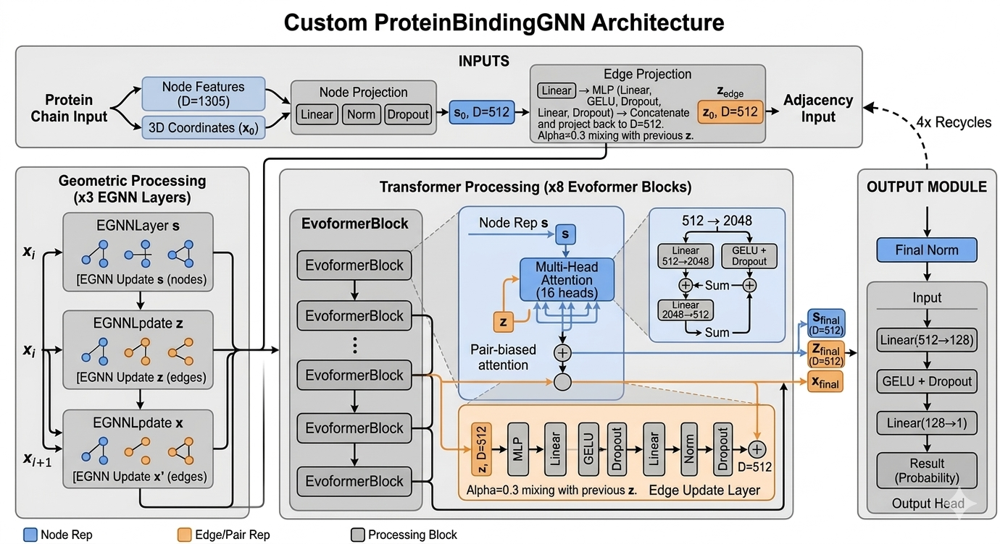

Open architecture figure
Research software
PyTorch Geometric
Predicting protein binding sites from structure graphs
GraphBind combines E(3)-equivariant graph neural networks with attention-based recycling to estimate residue-level ligand binding sites from protein structure and sequence-derived features.